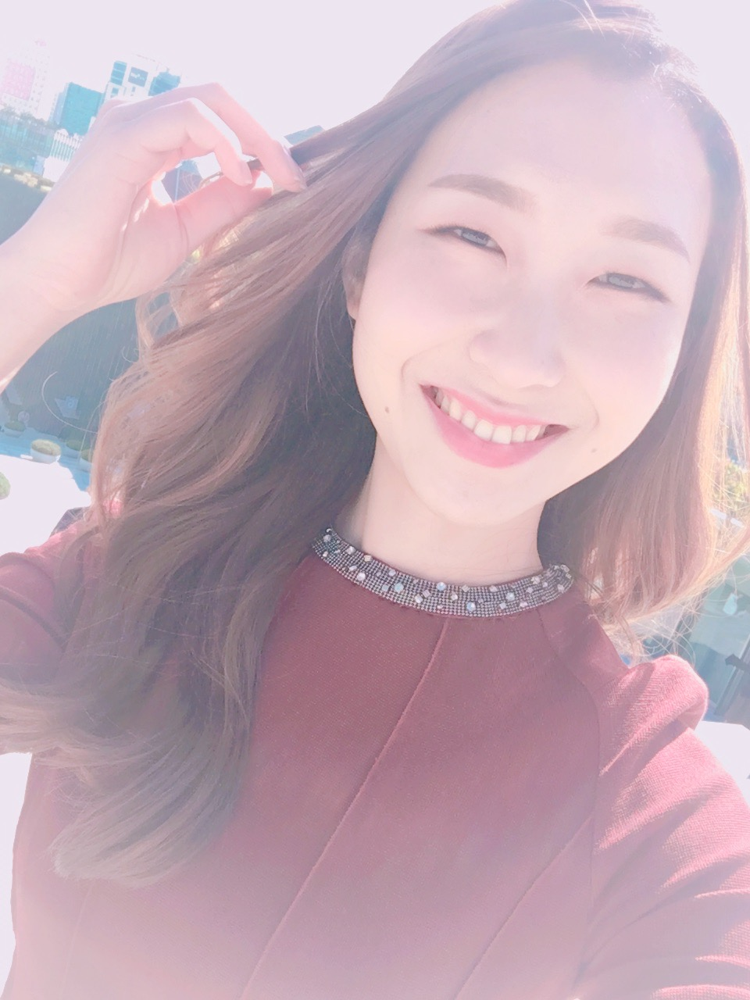

|  |
Crystal KimAccount Executive / Business Data Analyst
|
| Company | Position | Period | TEN Advertising | Account Executive | September 2021-Present |
|---|
| URi Global | Media Account Executive | September 2019-August 2021 |
| Wonderful | Customer Success Manager | August 2017-December 2018 |
|
|
| Bachelor of Arts / Chinese Literature & Language, Business Administration | |
| Ewha Womans University, Seoul, South Korea | March 2014-February 2020 |
| Exchange Student | |
| Fudan University, Shanghai, China | September 2015-July 2016 |
Big Data Social Marketing Analytic Report Contest
Korean-Chinese Thesis Contest